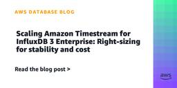
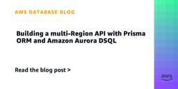
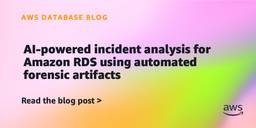
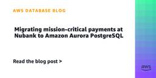
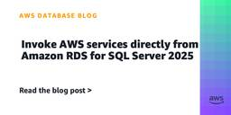
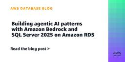
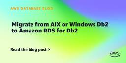
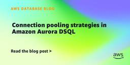

AWS Database Blog
フィード

Scale smart, not just big: a practical guide to multi-node Amazon Timestream for InfluxDB 3 Enterprise 1
1
AWS Database Blog
With the release of multi-node scaling for Amazon Timestream for InfluxDB 3 Enterprise, clusters can now support up to 15 nodes with distinct roles. You can separate ingestion, querying, and compaction to match your workload’s demands. In this post, we cover when to scale vertically versus horizontally, and how to make the right choice for both stability and cost.
2日前

Building a multi-Region API with Prisma ORM and Amazon Aurora DSQL
AWS Database Blog
In this post, we show how you can build a multi-Region active-active API using Prisma ORM and Amazon Aurora DSQL.
3日前

AI-powered incident analysis for Amazon RDS using automated forensic artifacts
AWS Database Blog
In this post, we demonstrate a serverless approach to continuous forensic artifact collection for Amazon RDS and Amazon Aurora databases. By capturing point-in-time snapshots of database internals on a cadence and storing them in Amazon S3, you create a time-series record that AI tools can analyze in seconds. This turns what was hours of manual investigation into an instant conversation.
3日前

Migrating mission-critical payments at Nubank to Amazon Aurora PostgreSQL 1
AWS Database Blog
Managing payment infrastructure at scale presents unique challenges that impact both performance and operational efficiency. In this post, we share the technical and operational challenges Nubank faced with self-managed PostgreSQL, the evaluation criteria they established for selecting database solutions, and the results from their successful migration to Amazon Aurora PostgreSQL-Compatible Edition. Nubank achieved up to 1,900x query performance improvements in specific cases.
3日前

Invoke AWS services directly from Amazon RDS for SQL Server 2025
AWS Database Blog
In this post, you learn how to use the sp_invoke_external_rest_endpoint stored procedure on Amazon RDS for SQL Server 2025 to call AWS services and external HTTPS endpoints directly from T-SQL.
4日前

Building agentic AI patterns with Amazon Bedrock and SQL Server 2025 on Amazon RDS 1
AWS Database Blog
In this post, we demonstrate how SQL Server 2025 on Amazon RDS can call Amazon Bedrock foundation models directly from T-SQL using sp_invoke_external_rest_endpoint. This approach removes middleware, reduces latency, and brings AI capabilities directly into database workflows.
4日前

Migrate from AIX or Windows Db2 to Amazon RDS for Db2 1
AWS Database Blog
In this post, we provide step-by-step instructions for migrating an IBM Db2 database from on-premises AIX or Windows servers to Amazon RDS for Db2 using native Db2 tools (db2look and db2move). We also cover AWS Database Migration Service (AWS DMS) as an alternative approach. It also covers best practices to verify data integrity and minimize cutover time.
4日前

Connection pooling strategies in Amazon Aurora DSQL 1
AWS Database Blog
In this post, you’ll learn four concrete strategies that help you reduce Aurora DSQL connection overhead, stay within the 100-connections-per-second rate limit, and avoid thundering-herd reconnection storms. By the end, you’ll have a production-ready checklist for configuring connection pools that support reliable performance at scale.
4日前

Introducing open source Bulk Executor for Amazon DynamoDB
AWS Database Blog
When using Amazon DynamoDB, you sometimes want to perform bulk operations against all the items in a table, which has historically required custom coding. The open source Bulk Executor for DynamoDB simplifies bulk tasks like these. You can use this feature to invoke commands like count, find, delete, or update. No coding is required, even when running at large scale. In this post, we explore the built-in capabilities of Bulk Executor and show you how to install and use it for common bulk operations against your DynamoDB tables.
9日前
Build a semantic ontology to power AI assistants on AWS – Part 1
AWS Database Blog
In this post, we show you how to build a semantic ontology that helps your AI assistants navigate enterprise data efficiently. You’ll learn how to structure a property graph store for data relationships, set up vector indexing for semantic search, and implement an automated fact-learning layer that improves use. This bottom-up approach grounds your ontology in the data that exists, building abstractions from observed patterns rather than theoretical models.
10日前
Rebuild large indexes on Aurora PostgreSQL with Blue/Green Deployments
AWS Database Blog
In this post, we show how to rebuild large indexes on Amazon Aurora PostgreSQL by combining Amazon Aurora Blue/Green Deployments with Aurora Optimized Reads. By performing the reindex on the green (staging) environment with a Non-Volatile Memory express (NVMe)-backed instance class, the sort phase uses fast local storage instead of Amazon EBS over the network, and you avoid impacting production workloads.
11日前
Provisioning DMS Schema Conversion via AWS CloudFormation
AWS Database Blog
AWS Database Migration Service Schema Conversion (DMS SC) converts database objects across heterogeneous systems such as Oracle or SQL Server to PostgreSQL or MySQL. In this post, we show you how DMS SC, with generative AI capabilities, elevates the code conversion experience.
11日前
Accelerate database modernization with agentic AI in AWS DMS Schema Conversion
AWS Database Blog
Starting today, you can use AI agents to orchestrate entire AWS DMS Schema Conversion (DMS SC) workflows through natural language. An AI agent manages the full lifecycle, including creating migration projects, browsing source metadata, converting schemas, generating assessment reports, and exporting results, all from a conversational prompt.
15日前
Diagnose and resolve replica lag in Amazon RDS for Oracle replicas – Part 2
AWS Database Blog
This post is the second in a two-part series on reducing replication lag for Amazon RDS for Oracle Read Replicas. In Part 1, we discussed redo compression and configuration options to optimize replica lag. In this post, we show you how to monitor replica lag using Amazon CloudWatch metrics and database views, identify common root causes through wait event analysis, and how to troubleshoot and resolve performance issues.
15日前
Optimize replication lag for Amazon RDS for Oracle replicas using redo compression – Part 1
AWS Database Blog
In part 1 (this post), we show you how to optimize lag for RDS for Oracle replicas using the redo compression feature. In part 2, we discuss various techniques to monitor, troubleshoot, and resolve replication lag for RDS for Oracle replicas.
15日前
Fail back from Amazon RDS for Db2 to on-premises AIX Db2 using DMS
AWS Database Blog
In this post, you learn how to set up CDC-only reverse replication from Amazon Relational Database Service (Amazon RDS) for Db2 back to your on-premises AIX Db2 instance using AWS Database Migration Service (AWS DMS).
16日前
Logical replication improvements in Amazon RDS for PostgreSQL 18
AWS Database Blog
In this post, we demonstrate how to use the PostgreSQL 18 logical replication improvements on RDS for PostgreSQL: replicating STORED generated columns with the publish_generated_columns parameter, monitoring conflicts through the new counters in pg_stat_subscription_stats, verifying that parallel streaming is enabled by default, toggling two-phase commit on a running subscription, and configuring idle_replication_slot_timeout for automatic slot cleanup. These features are available on RDS for PostgreSQL 18.0 and later and Aurora PostgreSQL.
17日前
Automate PostgreSQL audit log extraction and analysis with Amazon S3
AWS Database Blog
In this post, we show you how to deploy an automated pipeline that extracts PostgreSQL audit logs from CloudWatch Logs, converts them into structured comma-separated values (CSV) format, and stores them in Amazon S3 for long-term analysis. The solution processes log entries in near real time after generation.
17日前
Dynata’s journey to lower TCO and faster modernization with AWS Database Savings Plans
AWS Database Blog
In this post, we show how Dynata simplified database cost optimization and accelerated modernization to AWS Graviton processors by adopting Database Savings Plans. Rather than managing Reserved Instances across multiple database services, Dynata consolidated their cost commitment into a single, flexible pricing model. This reduced operational overhead by 70%, extended cost coverage to Amazon Aurora serverless, and lowered total cost of ownership as their infrastructure evolved.
18日前
Data masking in Amazon RDS for Oracle
AWS Database Blog
In this post, we walk through how to use the Oracle Data Masking and Subsetting Pack with Amazon RDS for Oracle. We cover setting up Data Masking in Oracle Enterprise Manager (OEM) and automation options.
22日前